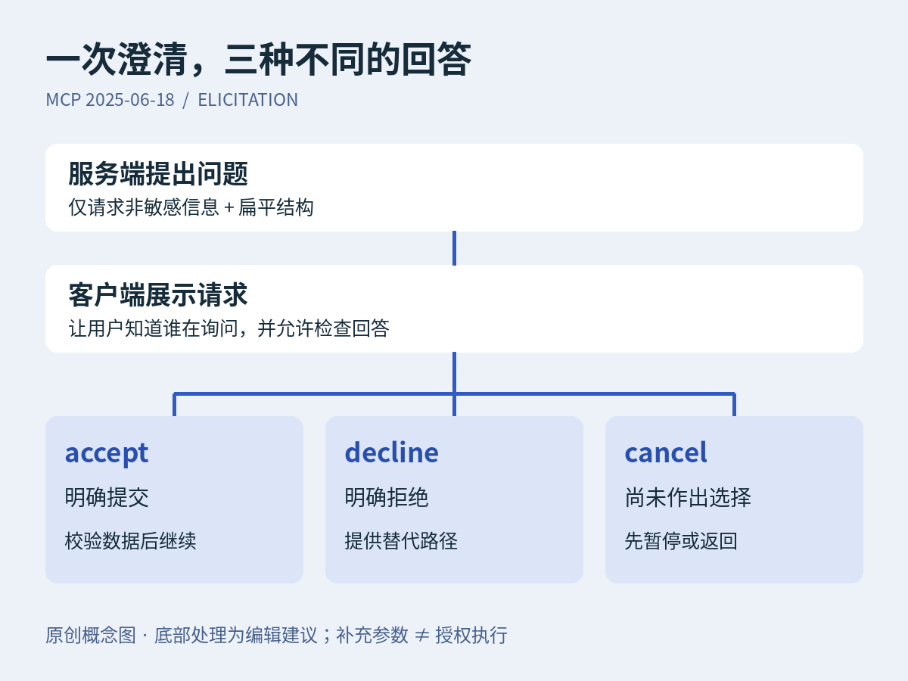

01 / AGENT · 技术分享 · 协议选读
把“再问一句”，变成可处理的状态
用户接受、拒绝与取消，值得三条不同的代码路径。
版本坐标。本文选读 MCP 版规范的 Elicitation，不是今日新功能，也不概括后续版本。它允许服务端经客户端请求用户补充结构化信息；客户端须先声明支持该能力，界面呈现方式则由实现决定。
官方机制。elicitation/create 携带问题和数据结构要求。该版结构仅支持由基础类型组成的扁平对象，不支持任意嵌套表单。返回的 accept 表示明确提交信息，decline 表示明确拒绝，cancel 表示没有作出明确选择。规范禁止用这个机制索取敏感信息。

本刊原创图解，依据 MCP 2025-06-18 规范；底部处理方式为编辑建议，不是授权协议或官方界面。
编辑示例。一个排期 Agent 缺少交付日期，可以请求日期字段；收到接受后校验格式并继续计算，收到拒绝后说明缺少日期会限制哪些结果，收到取消则先返回当前任务。不要把“窗口被关掉”记成“用户同意默认值”。这能让日志中的等待原因更容易解释。
适用边界。适合确实缺少非敏感参数的交互任务。补充信息与批准执行是不同环节：输入了日期，不等于批准创建会议；填了名称，也不等于批准向同名联系人发送消息。执行权限、目标核对与副作用控制仍应由应用单独处理。
02 / 后端与架构 · 技术分享 · 文档选读
稳定的快照，不等于能安全地一起提交
数据库要求重试时，业务判断也需要重新做。
版本坐标。依据 PostgreSQL 18 手册第 13.2 节；18.0 发布于 2025 年 9 月 25 日，手册本页未单列发布日期，核验于 2026 年 10 月 23 日（UTC+8）。这是隔离语义选读，不是新版本新闻，也不直接适用于其他数据库实现。
官方机制。在 PostgreSQL 中，Read Committed 的连续查询可能看到不同的已提交状态；Repeatable Read 使用稳定的事务快照，但仍允许序列化异常。Serializable 进一步检测可能破坏串行等价性的依赖，必要时使事务失败。应用必须准备重试整个事务，序列化失败的 SQLSTATE 为 40001。
原创业务示例。值班表有甲、乙两人，规则是“至少一人在岗”。两个事务各自读到两人在岗，然后分别把自己改为离岗。不同的行都能更新，并不证明跨行规则仍成立。
在相关事务都采用 Serializable、且单独执行能正确维护规则的前提下，这种不可能对应合法串行次序的并发结果不能全部成功提交。应用还需处理失败与重试。
编辑落地建议。把“读取当前人数 → 判断能否离岗 → 更新 → 提交”作为重试单元。只重放最后一条 UPDATE，会跳过已失效的业务判断。设置有限重试与退避，耗尽预算后返回可解释的失败；这些属于工程策略，具体次数应根据负载与业务时限决定。
适用边界。适合跨记录约束、复杂读后写等场景。数据库提交之前不要把查询结果当作最终业务事实。事务回滚也不会撤回已发出的邮件或远程扣款；这类外部副作用应另设去重、投递与核查机制。更强隔离有检测和重启成本，本文没有给出吞吐或延迟提升承诺。
03 / 科技新闻 · 官方公告 2026-10-22
Linear Loops：把事件接到工作的起点
从“有人发现变化”，走向“变化触发下一步”。
官方发布。Linear 在 10 月 22 日更新中宣布，Loops 新增 Slack 与 GitHub 事件触发，支持把 Loop 保存为工作区内可复用的模板，并提供推理等级设置。公告举例：在 Slack 频道回答产品问题，或在 GitHub PR 获得“ready for testing”标签后起草 QA 计划。
产品设置。推理等级可选 Auto、Low、Medium、High；Auto 使用工作区默认值。厂商将其定位为速度、成本与任务复杂度之间的调节手段。公告没有提供可供横向比较的质量、成本或延迟测量，本刊也未实测，因此不能推导“High 一定更准确”或具体节省比例。
编辑分析。值得关注的是触发入口和团队复用方式。复制一个模板前，仍要检查它监听哪个频道、哪类 PR、输出交给谁。事件重复到达时，生成第二份 QA 计划是否可接受？这是采用事件自动化时应先明确的行为，不是本次公告已保证解决的能力。
可用性边界。这里记录公告中的功能，不保证每个账户已配置连接或具备所需权限。公告示例是起草 QA 计划，也不能等同于测试已执行、通过或被批准合并。
04 / 科技趣闻 · 经典任务档案
发往宇宙的唱片，不只会“唱”
一张唱片，也能成为装着图像的时间胶囊。
NASA 档案。旅行者金唱片的内容包括 115 幅图像、自然声音、来自不同文化与时代的音乐，以及 55 种语言的问候。NASA 的图像说明指出，这些图像以模拟形式编码在唱片上。它不是把数码照片文件复制到一个随身存储设备那么简单。
为什么有趣。我们习惯把照片、音频和文档分成不同文件类型；金唱片提醒人们，媒介、编码规则与内容是三件事。编辑看来，长久保存信息时，“保存了什么”与“后来的人如何解读它”同样值得设计。这是信息表达的启发，并不意味着唱片已经被其他文明接收或解码。
来源与图片边界。本节为历史科技趣闻，不是今日任务进展；NASA 图像页标注 2024 年 5 月 9 日，内容总览页未单列日期，均于本轮核验。NASA 明确提示金唱片图像受版权保护，故本刊仅作文字介绍，不复制这些照片。